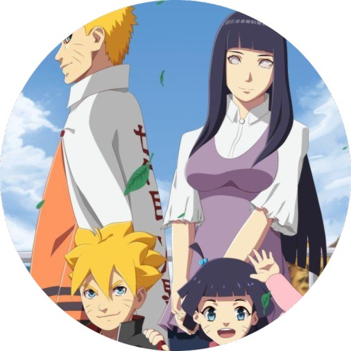
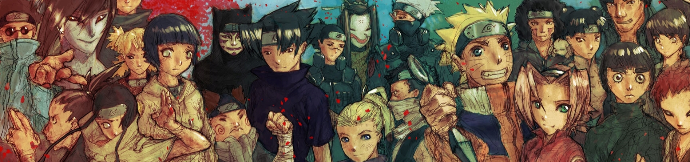

The Hidden Leaf [Konohagakure]
Konohagakure no Sato,"Village Hidden in the Leaves" or "Hidden Leaf Village",
literally meaning: Village Hidden by Tree Leaves) is the hidden village of the Land of Fire.
As the village of one of the Five Great Shinobi Countries, Konohagakure has a Kage
as its leader known as the Hokage, of which there have been seven in its history.
Konoha resides deep within a forest at the base of a mountain known as the Hokage Rock,
which has the faces of all those who have taken the office of Hokage engraved on it.
It is surrounded on all sides by enormous walls.
While generally seen as the most powerful of the ninja villages,Konoha has enjoyed many years of relative peace and stability.
What is Naruto?
|
Naruto is a Shonen (teen male oriented) animated series and manga (Japanese comic) created by Masashi Kishimoto.
Both the anime and the manga are ongoing in Japan at the moment. The series has been licensed abroad in various countries.
You can find Naruto manga on American shelves and the animated series airing in the Philippines.
The show takes place in a world populated by ninja villages. The ninja in the series serve as the armies for the countries that inhabit the world.
Most of the countries have their own Hidden Village, which serves to train and manage the ninja of the country.
Also the ninja in the series are able to utilize jutsu techniques, which are the secrecy, body and illusion arts of the ninja.
These allow the ninja to perform many amazing skills such as the manipulation of the surrounding elements.
The main character of the series is Uzumaki Naruto, a young boy who dreams of becoming the leader of his Hidden Village.
It will be difficult though for Naruto, because when he was a baby an evil demon was placed inside him to stop its rampage.
As Naruto grew the townspeople saw Naruto himself as the demon, even though he was merely its container.
When the series begins the reader and viewer will begin their journey with Naruto on his path to become respected by the village.
|
 |
JUTSU INFO
The Kage Guide
-
Hokage
-
Senju Hashirama
One of the founders of Leaf, Senju Hashirama helped establish the ideal of all the Hokage who followed.
The Hokage serves as the foundation which Leaf village sits.
The Hokage would love his village and do all in his power to protect it,
even giving his life in the line of duty to ensure its survival.
-
Senju Tobirama
Senju Tobirama also helped in the founding of Leaf, he was the younger brother of Hashirama.
Like Shodai Hokage, Tobirama helped establish the principle that the Hokage
will die for those people precious to them.
- Sarutobi Hiruzen
Sandaime Hokage became Hokage at a very young age. He was chosen as Hokage over another talented ninja named Danzou.
Sarutobi Hiruzen was known as the Professor, a ninja with extraordinary skill and knowledge of jutsu.
He would later pass on his knowledge to his students Jiraiya, Tsunade and Orochimaru.
Jiraiya would then in turn pass on his knowledge to Namikaze Minato, who would become Yondaime Hokage.
After Yondaime Hokage's death, the Sandaime came out of retirement to lead his village again.
-
Namikaze Minato
Sandaime Hokage first wanted Orochimaru to succeed him, but his evil ways caused Hiruzen to choose Namikaze Minato instead.
Yondaime Hokage was faced with a difficult challenge not long after being appointed. One of the great demons, the Kyuubi fox attacked his village.
Many ninja died and Yondaime had to give his life to beat the Kyuubi and imprison him in his newborn son.
His death caused the Sandaime Hokage to come out of retirement and act as Hokage once again.
-
Lady Tsunade
Though Tsunade was the granddaughter of Shodai Hokage and a student of the Sandaime Hokage, she was reluctant to become Godaime Hokage.
Her boyfriend and little brother both had dreams of becoming Hokage and died while trying to further that goal.
When she met Uzumaki Naruto she thought that he was also going down a foolish path,
but his hard work and determination inspired her to think that becoming Hokage was a worthwhile thing.
-
Danzou[temporary]
After Tsunade exhausted herself saving the village when Akatsuki leader Pain attacked, she fell into an unconscious state.
Danzou then made his move to convince the Fire Country Daimyou that he was the best choice to be the next Hokage.
The Daimyou approved of Danzou through hypnosis, though Danzou did not have the full approval of the Leaf Jounin.
When Danzou was killed and Tsunade returned from her coma, she returned to power as Godaime Hokage.
She later stepped down after the Fourth Great Ninja War.
-
Hatake Kakashi
Following the end of the Fourth Great Ninja War, Hatake Kakashi became the official Rokudaime Hokage of Hidden Leaf.
He served in office for over a decade before finally stepping down.
-
Uzumaki Naruto
After expanding his skills and becoming recognized by his village and the shinobi world, he became the Nanadaime Hokage.
Son of the Yondaime Hokage, Uzumaki Naruto grew up dreaming of one day becoming Hokage.
|
|
-
Mizukage
-
Byakuren
The founding leader of Kirigakure no Sato, Byakuren served as Shodai Mizukage.
-
Houzuki Gengetsu
A member of the Houzuki clan, Houzuki Gengetsu acted as Nidaime Mizukage of Hidden Mist Village.
As leader, he met Muu the Nidaime Tsuchikage in battle. He managed to kill the Tsuchikage, but not before the Tsuchikage also delivered a fatal attack in turn.
He was later resurrected by Kabuto with Edo Tensei.
- Shodai Mizukage.
Sandaime Mizukage was the leader of Hidden Mist. He attended the first Kage summit alongside Shodai Mizukage.
-
Yagura
Yagura was Yondaime Mizukage and the Jinchuuriki for the Sanbi Bijuu.
Under Yondaime's reign, bloody civil strife was rampant leading to the village earning the name "Blood Mist" Village.
Mist ninja Momochi Zabuza attempted to assassinate the Mizukage; it is unknown whether he went after Yondaime or Godaime.
-
Terumii Mei
Some time after Yondaime Mizukage's reign came to an end, Terumii Mei became Godaime Mizukage.
As Mizukage, she hoped to not repeat her village's bloody past.
She joined the other great Shinobi nations in the Fourth Great Ninja War against Akatsuki.
-
Choujuurou
A shinobi from the Seven Swordsmen of the Mist, Choujuurou became the Rokudaime Mizukage after the Fourth Great Ninja War
|
|
|
-
Raikage
-
Ei (A) The First
The founding leader of Kumogakure no Sato, Ei (A) served as Shodai Raikage.
-
Ei (A) The Second
Nidaime Raikage led Hidden Cloud at a time when peace was attempted between Kumo and Konoha.
After becoming leader of his village, he took the name "Ei (A)". At a meeting between Raikage and Nidaime Hokage to solidfy the peace,
two brothers from Kumo named Ginkaku and Kinkaku attempted a coup d'etat against their leader.
- Ei (A) The Third
Sandaime Raikage led Hidden Cloud at a time when their Bijuu the Hachibi was difficult to control.
None of their Jinchuuriki could control the beast, forcing them to subdue and remove it from its host.
When his nephew Blue B eventually lost control, A directed the beast be imbued into the young Killer Bee.
After becoming leader of his village, he took the name "Ei (A)". He was later resurrected by Kabuto with Edo Tensei.
-
Ei (A) The Fourth
Taking the same name as his predecessors, Ei (A) was Yondaime Raikage of Hidden Cloud Village and became Kage after his father.
The Raikage sought to obtain the Byakugan from Konoha, and dispatched a team to kidnap Hyuuga Hinata. A is the older "blood" brother of Killer Bee,
the Eight-Tails Jinchuuriki. After Bee was captured by Akatsuki, he sought a meeting of the Five Kages to discuss dealing with Akatsuki.
-
Dauri
Darui was Godaime Raikage of Hidden Cloud Village.
After serving as a Commander in the Shinobi Alliance against Akatsuki, Darui became leader of his village.
|
|
|
-
Kazekage
-
Retto
Retto helped found Hidden Sand and went on to become its Shodai Kazekage.
-
Shamon
Nidaime Kazekage served as the Kage of Hidden Sand.
Shamon attended the first Kage summit alongside Shodai Kazekage.
- The Third
andaime Kazekage was said to be the most gifted kage in Hidden Sand's history with his ability to manipulate Iron Sand.
He disappeared under mysterious circumstances right before war broke out.
Years later it was revealed he was killed by expert puppet maker Sasori and turned into his most prized puppet.
-
Rasa
Yondaime Kazekage replaced his predecessor who disappeared under mysterious circumstances.
Rasa was the father of Gaara, Temari and Kankurou and he ordered the Shukaku demon be implanted into his unborn son Gaara.
After falling in battle to Orochimaru, his son Gaara was appointed to replace him.
He was later resurrected by Kabuto with Edo Tensei.
-
Gaara
After Naruto and Jiraiya left for 2 1/2 years to train, Gaara was appointed as Godaime Kazekage of Hidden Sand.
The village council appointed Gaara on the notion he was now more in control of his homicidal tendencies.
|
|
|
-
Tsuchikage
-
Ishikawa
The founding leader of Iwagakure no Sato, Ishikawa served as Shodai Tsuchikage.
He taught a young Oonoki the importance of believing in ones own strength and will and never forsaking it.
-
Mū
Known as the "Invisible Man" due to his ability to totally hide his presence and chakra,
Muu passed on the secrets of Jinton to Oonoki the Sandaime Tsuchikage. Muu used his skills to kill Nidaime Mizukage,
unfortunately he also died in the battle. He was later resurrected by Kabuto with Edo Tensei.
- Ōnoki
Oonoki was Sandaime Tsuchikage of Hidden Rock Village.
His elder status gave him numerous years of experience but also put strain on his body due to his age.
-
Kurotsuchi
Kurotsuchi was Yondaime Tsuchikage of Hidden Rock Village.
She succeeded her grandfather Oonoki as leader of the village.
|
|
 |
Jinchūriki Guide
|
Jinchūriki (人柱力, literally meaning: Power of Human Sacrifice) are humans that have tailed beasts sealed within them.
They exhibit extraordinary powers due to the immense chakra reserves they possess.
|
|
History
A millennium ago, the world was terrorised by a rampaging, colossal monster known as the Ten-Tails.
Eventually, through the combined efforts of the twin brothers, Hagoromo and Hamura Ōtsutsuki, the Ten-Tails was defeated and sealed within Hagoromo, becoming its jinchūriki.
Throughout his travels, Hagoromo used the Ten-Tails' power to perform many great deeds and promote peace during his lifetime, causing him to be revered as the "Sage of Six Paths".
Towards the end of his life, Hagoromo, knowing the Ten-Tails would be unleashed on the world again when he died, split its chakra into nine living entities called the tailed beasts.
Although humanity would for centuries exploit the tailed beasts as sources of power, it would not be until after the establishment of the hidden villages that the practice of creating jinchūriki resumed.
The new hidden villages, each with their own tailed beasts, started sealing the beasts into selected villagers: in Konohagakure this was done to protect the village from its beast, the Nine-Tails;
in Sunagakure, the abilities that manifested in their jinchūriki were studied so that non-jinchūriki could replicate them; more often than not, though,
the jinchūriki were meant to be nothing more than military potential, with little regard for the jinchūriki or even the tailed beast.
Because of the difficulties involved when learning to control a tailed beast and the history the tailed beast itself may have with a village, jinchūriki are often hated and ostracised by their fellow villagers,
treated as no different than the beast they contain. Members of Akatsuki report that villages are often glad to be rid of their jinchūriki. However, because a jinchūriki is so valuable an asset,
it is not in the village's interest to let them be captured or turn into missing-nin. To strengthen the jinchūriki's bond with the village, it is tradition for them to be related to their village's Kage: for example,
Killer B is the adopted brother of the Fourth Raikage and Gaara is the youngest son of the Fourth Kazekage.
While many jinchūriki do indeed experience hardship in their early lives, either being mistreated by the majority of the village or dying in their failed attempts to control their tailed beasts,
some are able to earn respect and recognition both within their village and in the wider world: Gaara and Yagura Karatachi becomes their villages' Kage, while Killer B, Yugito Nii, and Naruto Uzumaki become regarded as heroes and icons of their
villages,
with Naruto also becoming a Kage eventually. Fifteen years after the Fourth Shinobi World War, Naruto and Killer B are the only two jinchūriki, as a result of the changes that came about.
After Naruto losing Kurama via the Baryon Mode, Killer B is now the last Jinchūriki in existence.
The AKATSUKI
|
Akatsuki (暁, literally meaning: "Dawn" or "Daybreak") was a group of shinobi that existed outside the usual system of hidden villages.
Over the course of several decades, Akatsuki took different forms and was led by different individuals.
Though each iteration is viewed as either subversives or criminals, all seek to make the world a better place through their own means.
Each Akatsuki tended to have multiple lairs across the world, inaccessible either due to their remoteness or the various security measures that protected them.
|

|
Who created Naruto?
The Naruto manga is drawn by Masashi Kishimoto. Kishimoto was born in the Okayama Prefecture, Japan in 1974. He gained early acclaim with his work Karakuri.
Later in 1997 he would develop an early incarnation of Naruto for Akamaru Jump. The manga would formally begin in 1999 in Weekly Shonen Jump, gaining a large fan following.
Kishimoto is not alone in drawing the series, he has assistants who share various drawing duties. These individuals are:
|
Kazuhiro Takuhashi
|
Osamu Kazisa
|
Mikio Ikemoto
|
Takemi Kawahara
|
| Focuses on solid blacks in hair and clothing, fills in the half-tone areas and completes the background art. |
Works similar to Takuhashi, also good at creating speedlines, special effects and plant-life. |
Works on crowds and background figures, also adds white to speed lines, characters eyes and highlights.
Also cleans up the page by whiting out any art which goes out of the panel. Also adds in half-tones.
|
Has a hand in most everything in the drawing process. |
